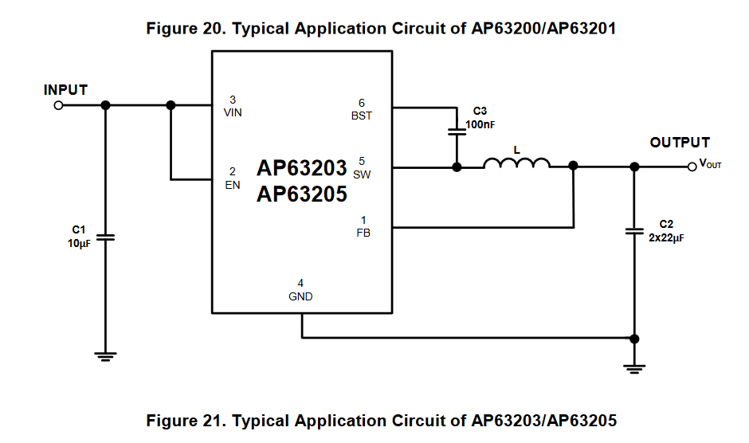

Overview
In this project, I wrote a simple UART console that responds to keyboard inputs to control an LED and its blink speed. A demonstration of the firmware is at the bottom of the page.
The banner picture at the top of the page is the schematic I made for the STM32F070F6P6TR.
The design took two revisions to build. the first design was nearly impossible to solder by hand due to the combination of 0402 components and overcrowding. It also used usb-c which overcomplicated the layout and tolerances.
The second revision used micro usb and 0805 components so I wouldnt’t go crazy. I used copper pours for the components at the input and output of the voltage regulator, but I would remove this if given the chance. The pours were acting as a heatsink, causing extra difficulty with soldering and tombstoning. Thermal reliefs would have helped.
After soldering, I plugged in the usb... and nothing. Some debugging showed that the voltage coming into the regulator was 5V and coming out as 300 mV. It turns out I made a mistake in the regulator circuit. From the Datasheet:
Incorrect original design.
Corrected Circuit:
The circuit bug is unfortunate, but the header pins each have a direct connection to the power rail so the regulator can be bypassed. (no more plugging in via usb). After bypassing the usb power with alligator clips, the power LED turned on.
After uploading a simply blinky program through the SWD pins, I started testing the UART with the code. The UART worked properly, but while setting up to record, I decided to power the board from the 3V3-USB-TTL cable I was using for the UART. Turns out only the logic is 3.3V and the power comes straight from the usb port as 5V, which fried both my board and my programmer…
Between the two board revisions, circuit issues, and blowing up the board in the end, this project was a little frustrating, but it was nice to at least know why each problem happened. Also the code still worked on the pcb (You just had to be there).